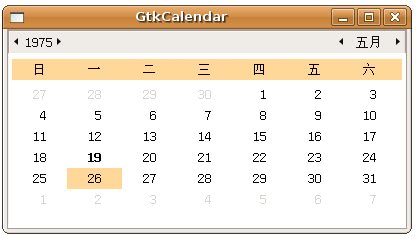

GtkCalendar 是個可以顯示月曆的元件，只要使用gtk_window_new()建立元件，就可以擁有一個完整的日曆元件顯示，若要設定日期，則可以使用 gtk_calendar_select_month()設定年及月份，使用gtk_calendar_select_day()設定日。
使用gtk_calendar_select_month()設定時要注意的是，月份可設定的數值是從0到11，0表示1月，11表示12月，而使用gtk_calendar_select_day()設定值則為1到31，或是設定為0表示不選取日。
您可以使用gtk_calendar_mark_day()、gtk_calendar_unmark_day()或 gtk_calendar_clear_marks()設定日期標記，若要得知被標記的日期資訊，可以透過GtkCalendar結構的成員 num_marked_dates得知有幾天被標記了，marked_date為一個陣列，可用以得知哪一天被標記了，例如：
if (calendar->marked_date[26-1]) {
// 日期 26 被標記了
}
// 日期 26 被標記了
}
要注意的是，陣列索引值是從0開始，所以存取marked_date時，日期實際上要減去1，才會是對應的索引。
另外，Calendar成員中的month、year與selected_day分別表示目前看到的月、年及所選中的日，若要取得選中的年、月、日，則可 以使用gtk_calendar_get_date()函式，您必須提供三個變數的位址給它，執行過後，三個變數中就會儲存對應的年、月、日：
void gtk_calendar_get_date(GtkCalendar *calendar,
guint *year,
guint *month,
guint *day);
guint *year,
guint *month,
guint *day);
下面這個程式是個簡單的示範：
- gtkcalendar_demo.c
#include <gtk/gtk.h>
int main(int argc, char *argv[]) {
GtkWidget *window;
GtkWidget *calendar;
guint year = 1975;
guint month = 5 - 1; // 5 月
guint day = 26;
guint mark_day = 19;
gtk_init(&argc, &argv);
window = gtk_window_new(GTK_WINDOW_TOPLEVEL);
gtk_window_set_title(GTK_WINDOW(window), "GtkCalendar");
calendar = gtk_calendar_new();
gtk_calendar_select_month(GTK_CALENDAR(calendar), month, year);
gtk_calendar_select_day(GTK_CALENDAR(calendar), day);
gtk_calendar_mark_day(GTK_CALENDAR(calendar), mark_day);
gtk_container_add(GTK_CONTAINER(window), calendar);
g_signal_connect(GTK_OBJECT(window), "destroy",
G_CALLBACK(gtk_main_quit), NULL);
gtk_widget_show_all(window);
gtk_main();
return 0;
}一個執行結果如下所示：
